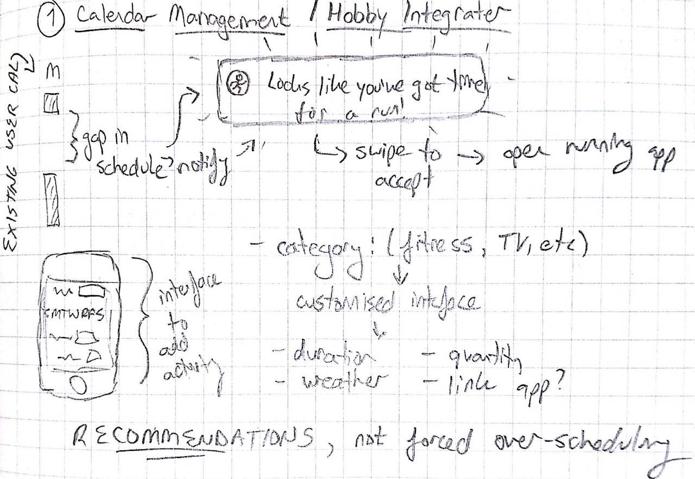
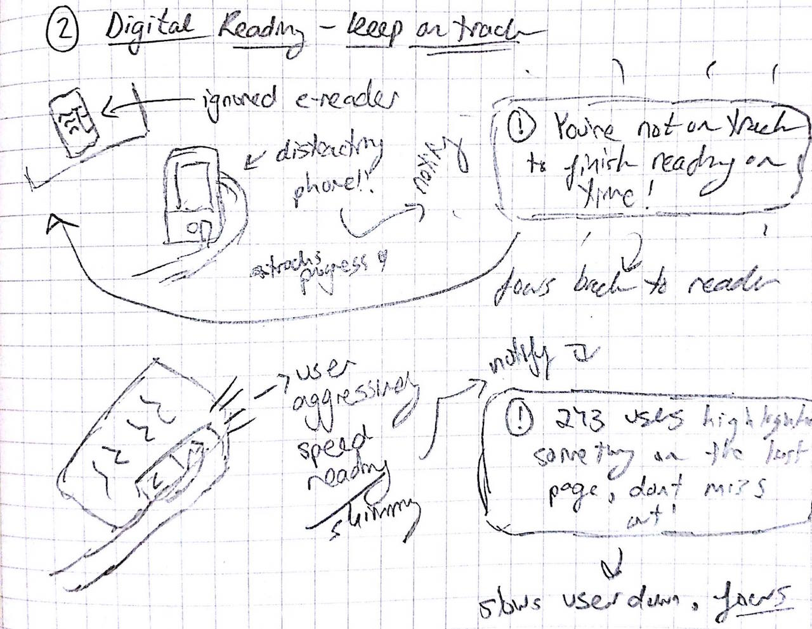
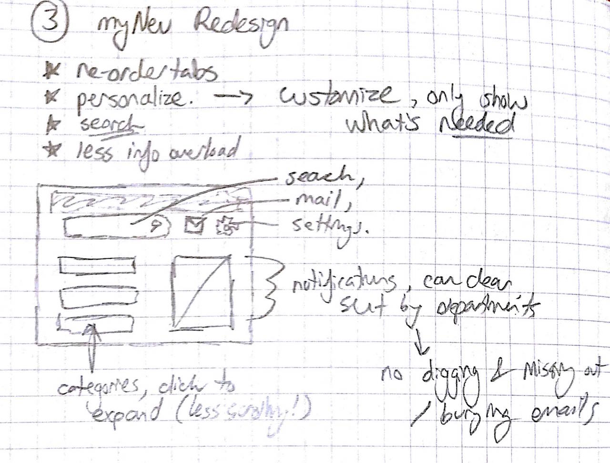

Idea 1: Calendar/Hobby Balancer
- An interface that helps a user find time for their hobbies given an understanding of their "locked-in" working schedule.
-
One of the most often occuring forms of procrastionation that I face is stressing about the obligations that I have ahead of me. This is a huge source of wasted time that could be spent enjoying a hobby, destressing and helping find a balance in life.
An interface/assistant that could work off of a user's existing calendar of set events and "fill the gaps" with reccomendations based on their interests could fix this common issue. Many hobbies could be considered- such as fitness (based on length of workout, weather, time of day), shows (recorded or live based on the availablity of free time), meals, etc. All reccomendations would be via notification, never modifying the user's calendar as to avoid over-scheduling them or annoying them.
|

|
Idea 2: Reading Focuser
- An interface that keeps users focused on their digital media / ebooks.
-
I often find myself prefering the print version of books due to an inability to focus on digital copies. This is due to both the overload of features that most devices provide, and also the inability to gauge progress through a book in the same way that thickness of pages provides.
An interface that kept track of a readers habits to notice abnormalities such as skimming and lack of progression could help make a user more aware of such issues. By setting goals (eg. "Only 10 more pages, stay focused!") and being compared to other users data(eg. "You skimmed past the last page when 124 users highlighted something on it!") this interface could keep users focused.
|

|
Idea 3: myNEU Redesign
- A redesign of the myNEU interface to deal with common confusion and information overload.
-
myNeu is a constant source of frustration for Northeastern students due to a lack of organization and overload of unhelpful links.
An interface with the added features of customization and searching would help solve this issue. If a search feature was added, there would be less need for an overload of possible links and information, many of which are not often used by students. By breaking things down further into categories, students could find what they need without scrolling and scanning through all possible options. Also, certain options do not apply to certain students- the page should be personalized accordingly to avoid irrelevance.
|

|